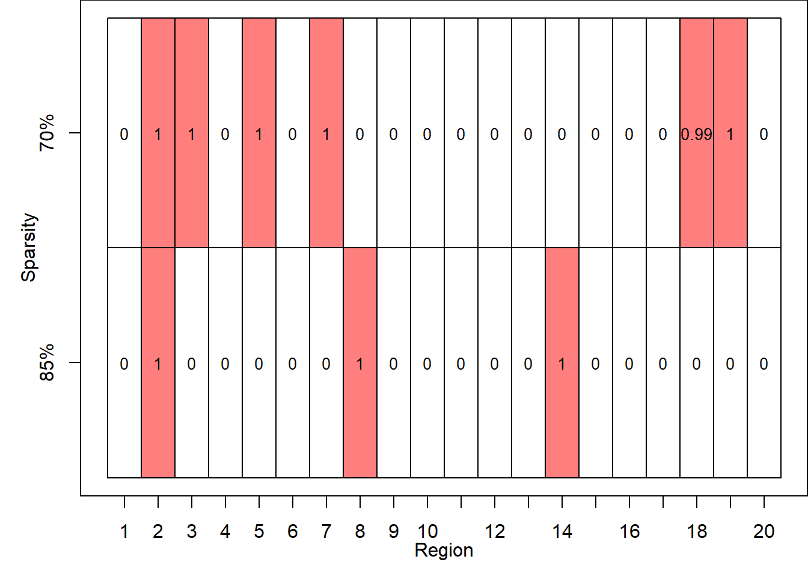

Chapter 5 Example
In this chapter the use of [bmrr::bmrr_sampler] is illustrated with data generated by [bmrr::bmrr_data_sim]. The example uses the generating parameters of the paper “Multi-Object Data Integration in the Study of Primary Progressive Aphasia” for the “Small Dimensional” case with a sparsity of 85% and 70%.
If the package is not installed, enter:
library(devtools)
install_github("Rene-Gutierrez/bmrr")Then load the package:
The generate a data set with bmrr_data_sim and then using the generated data
set a run of bmrr_sampler.
set.seed(02092023)
dat_1 <- bmrr_data_sim(P = 20,
V = rep(10, 20),
N = 25,
H = 3,
nu = 0.15,
u = rep(0.4, 20),
cB = c(0.25, 1),
cT = c(0.25, 1),
s2B = 1,
s2T = 1,
cDA = 0,
cDG = 0,
s2DA = 1,
s2DG = 1,
s2A = 1,
s2G = 1)
dat_2 <- bmrr_data_sim(P = 20,
V = rep(10, 20),
N = 25,
H = 3,
nu = 0.30,
u = rep(0.4, 20),
cB = c(0.25, 1),
cT = c(0.25, 1),
s2B = 1,
s2T = 1,
cDA = 0,
cDG = 0,
s2DA = 1,
s2DG = 1,
s2A = 1,
s2G = 1)
out_1 <- bmrr_sampler(y = dat_1$y,
X = dat_1$X,
G = dat_1$G,
A = dat_1$A,
nmcmc = 5000,
burnin = 1000,
thinning = 1)
out_2 <- bmrr_sampler(y = dat_2$y,
X = dat_2$X,
G = dat_2$G,
A = dat_2$A,
nmcmc = 5000,
burnin = 1000,
thinning = 1)Now a plot like Figure 2 of the paper is generated.
xmin <- 0
xmax <- 20
ymin <- 0
ymax <- 2
P <- 20
par(mar = c(3.5, 3.5, 0, 0))
plot(-1,
type = 'l',
xlab = "",
ylab = "",
ylim = c(ymin, ymax),
xlim = c(xmin, xmax),
yaxt = 'n',
xaxt = 'n',
lwd = 2)
rect(xleft = (1:P)[dat_1$g == 1] - 1,
xright = (1:P)[dat_1$g == 1],
ybottom = rep(1, P)[dat_1$g == 1] - 1,
ytop = rep(1, P)[dat_1$g == 1],
density = NA,
col = rgb(1, 0, 0, 0.5),
border = "black")
rect(xleft = (1:P)[dat_1$g == 0] - 1,
xright = (1:P)[dat_1$g == 0],
ybottom = rep(1, P)[dat_1$g == 0] - 1,
ytop = rep(1, P)[dat_1$g == 0],
density = NA,
col = rgb(1, 1, 1, 0.5),
border = "black")
text(x = 1:P - 0.5,
y = rep(0, P) + 0.5,
labels = round(colMeans(out_1$sam$g), 2),
cex = 0.85)
rect(xleft = (1:P)[dat_2$g == 1] - 1,
xright = (1:P)[dat_2$g == 1],
ybottom = rep(1, P)[dat_2$g == 1],
ytop = rep(1, P)[dat_2$g == 1] + 1,
density = NA,
col = rgb(1, 0, 0, 0.5),
border = "black")
rect(xleft = (1:P)[dat_2$g == 0] - 1,
xright = (1:P)[dat_2$g == 0],
ybottom = rep(1, P)[dat_2$g == 0],
ytop = rep(1, P)[dat_2$g == 0] + 1,
density = NA,
col = rgb(1, 1, 1, 0.5),
border = "black")
text(x = 1:P - 0.5,
y = rep(0, P) + 1.5,
labels = round(colMeans(out_2$sam$g), 2),
cex = 0.85)
axis(side = 1, at = 0:(P - 1) + 0.5, labels = 1:P)
axis(side = 2, at = 1:2 - 0.5, labels = c("85%", "70%"))
title(ylab = "Sparsity",
line = 1.8,
xlab = "Region")
This file is available to edit as 04-example at Github.